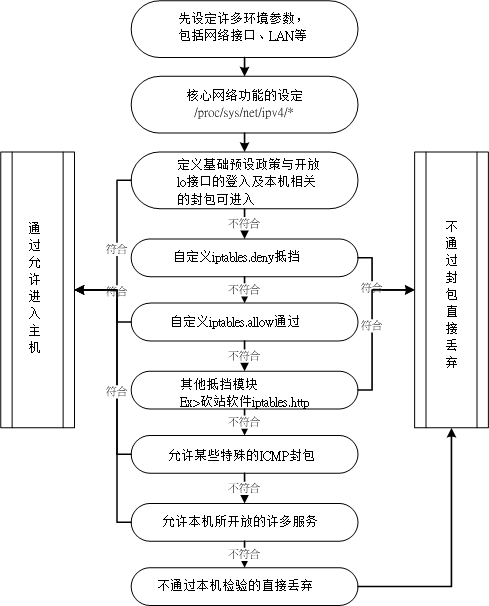

介绍了这么多的防火墙语法与相关的注意事项后，终于要来架设防火墙了。鸟哥还是比较偏好使用脚本来撰写防火墙，
然后透过最终的 /etc/init.d/iptables save 来将结果储存到 /etc/sysconfig/iptables 去！
而且此一特色还可以用在呼叫其他的 scripts ，可以让防火墙规则具有较为灵活的使用方式。
好了，那就来谈谈如何设定咱们的防火墙规则吧！
鸟哥底下介绍的这个防火墙，其实可以用来作为路由器上的防火墙，也可以用来作为本机的防火墙。
假设硬件联机如同下图所示， Linux 主机本身也是内部 LAN 的路由器！亦即是一个简单的 IP
分享器的功能啦！依据第三章的图 3.2-1
假设鸟哥网络接口有底下这些：
- 外部网络使用 eth0 (如果是拨接，有可能是 ppp0，请针对你的环境来设定)；
- 内部网络使用 eth1 ，且内部使用 192.168.100.0/24 这个 Class ；
- 主机默认开放的服务有 WWW, SSH, https 等等；

图 9.4-1、一个局域网络的路由器架构示意图
由于希望将信任网域 (LAN) 与不信任网域 (Internet) 整个分开的完整一点，
所以希望你可以在 Linux 上面安装两块以上的实体网卡，将两块网卡接在不同的网域，这样可以避免很多问题。
至于最重要的防火墙政策是：『关闭所有的联机，仅开放特定的服务』模式。
而且假设内部使用者已经受过良好的训练，因此在 filter table 的三条链个预设政策是：
- INPUT 为 DROP
- OUTPUT 及 FORWARD 为 ACCEPT
鸟哥底下预计提供的防火墙流程是这样的：

图 9.4-2、本机的防火墙规则流程示意图
原则上，内部 LAN 主机与主机本身的开放度很高，因为 Output 与 Forward
是完全开放不理的！对于小家庭的主机是可以接受的，因为我们内部的计算机数量不多，而且人员都是熟悉的，
所以不需要特别加以控管！但是：『在大企业的内部，这样的规划是很不合格的，
因为你不能保证内部所有的人都可以按照你的规定来使用 Network ！』也就是说『家贼难防』呀！
因此，那样的环境连 Output 与 Forward 都需要特别加以管理才行！
事实上，我们在设定防火墙的时候，不太可能会一个一个指令的输入，通常是利用 shell scripts
来帮我们达成这样的功能吶！底下是利用上面的流程图所规划出来的防火墙脚本，你可以参考看看，
但是你需要将环境修改成适合你自己的环境才行喔！此外，为了未来修改维护的方便，鸟哥将整个 script 拆成三部分，分别是：
- iptables.rule：设定最基本的规则，包括清除防火墙规则、加载模块、设定服务可接受等；
- iptables.deny：设定抵挡某些恶意主机的进入；
- iptables.allow：设定允许某些自定义的后门来源主机！
鸟哥个人习惯是将这个脚本放置到 /usr/local/virus/iptables 目录下，你也可以自行放置到自己习惯的位置去。
那底下就来瞧瞧这支脚本是怎么写的吧！
[root@www ~]# mkdir -p /usr/local/virus/iptables
[root@www ~]# cd /usr/local/virus/iptables
[root@www iptables]# vim iptables.rule
#!/bin/bash
# 请先输入您的相关参数，不要输入错误了！
EXTIF="eth0" # 这个是可以连上 Public IP 的网络接口
INIF="eth1" # 内部 LAN 的连接接口；若无则写成 INIF=""
INNET="192.168.100.0/24" # 若无内部网域接口，请填写成 INNET=""
export EXTIF INIF INNET
# 第一部份，针对本机的防火墙设定！##########################################
# 1. 先设定好核心的网络功能：
echo "1" > /proc/sys/net/ipv4/tcp_syncookies
echo "1" > /proc/sys/net/ipv4/icmp_echo_ignore_broadcasts
for i in /proc/sys/net/ipv4/conf/*/{rp_filter,log_martians}; do
echo "1" > $i
done
for i in /proc/sys/net/ipv4/conf/*/{accept_source_route,accept_redirects,\
send_redirects}; do
echo "0" > $i
done
# 2. 清除规则、设定默认政策及开放 lo 与相关的设定值
PATH=/sbin:/usr/sbin:/bin:/usr/bin:/usr/local/sbin:/usr/local/bin; export PATH
iptables -F
iptables -X
iptables -Z
iptables -P INPUT DROP
iptables -P OUTPUT ACCEPT
iptables -P FORWARD ACCEPT
iptables -A INPUT -i lo -j ACCEPT
iptables -A INPUT -m state --state RELATED,ESTABLISHED -j ACCEPT
# 3. 启动额外的防火墙 script 模块
if [ -f /usr/local/virus/iptables/iptables.deny ]; then
sh /usr/local/virus/iptables/iptables.deny
fi
if [ -f /usr/local/virus/iptables/iptables.allow ]; then
sh /usr/local/virus/iptables/iptables.allow
fi
if [ -f /usr/local/virus/httpd-err/iptables.http ]; then
sh /usr/local/virus/httpd-err/iptables.http
fi
# 4. 允许某些类型的 ICMP 封包进入
AICMP="0 3 3/4 4 11 12 14 16 18"
for tyicmp in $AICMP
do
iptables -A INPUT -i $EXTIF -p icmp --icmp-type $tyicmp -j ACCEPT
done
# 5. 允许某些服务的进入，请依照你自己的环境开启
# iptables -A INPUT -p TCP -i $EXTIF --dport 21 --sport 1024:65534 -j ACCEPT # FTP
# iptables -A INPUT -p TCP -i $EXTIF --dport 22 --sport 1024:65534 -j ACCEPT # SSH
# iptables -A INPUT -p TCP -i $EXTIF --dport 25 --sport 1024:65534 -j ACCEPT # SMTP
# iptables -A INPUT -p UDP -i $EXTIF --dport 53 --sport 1024:65534 -j ACCEPT # DNS
# iptables -A INPUT -p TCP -i $EXTIF --dport 53 --sport 1024:65534 -j ACCEPT # DNS
# iptables -A INPUT -p TCP -i $EXTIF --dport 80 --sport 1024:65534 -j ACCEPT # WWW
# iptables -A INPUT -p TCP -i $EXTIF --dport 110 --sport 1024:65534 -j ACCEPT # POP3
# iptables -A INPUT -p TCP -i $EXTIF --dport 443 --sport 1024:65534 -j ACCEPT # HTTPS
# 第二部份，针对后端主机的防火墙设定！###############################
# 1. 先加载一些有用的模块
modules="ip_tables iptable_nat ip_nat_ftp ip_nat_irc ip_conntrack
ip_conntrack_ftp ip_conntrack_irc"
for mod in $modules
do
testmod=`lsmod | grep "^${mod} " | awk '{print $1}'`
if [ "$testmod" == "" ]; then
modprobe $mod
fi
done
# 2. 清除 NAT table 的规则吧！
iptables -F -t nat
iptables -X -t nat
iptables -Z -t nat
iptables -t nat -P PREROUTING ACCEPT
iptables -t nat -P POSTROUTING ACCEPT
iptables -t nat -P OUTPUT ACCEPT
# 3. 若有内部接口的存在 (双网卡) 开放成为路由器，且为 IP 分享器！
if [ "$INIF" != "" ]; then
iptables -A INPUT -i $INIF -j ACCEPT
echo "1" > /proc/sys/net/ipv4/ip_forward
if [ "$INNET" != "" ]; then
for innet in $INNET
do
iptables -t nat -A POSTROUTING -s $innet -o $EXTIF -j MASQUERADE
done
fi
fi
# 如果你的 MSN 一直无法联机，或者是某些网站 OK 某些网站不 OK，
# 可能是 MTU 的问题，那你可以将底下这一行给他取消批注来启动 MTU 限制范围
# iptables -A FORWARD -p tcp -m tcp --tcp-flags SYN,RST SYN -m tcpmss \
# --mss 1400:1536 -j TCPMSS --clamp-mss-to-pmtu
# 4. NAT 服务器后端的 LAN 内对外之服务器设定
# iptables -t nat -A PREROUTING -p tcp -i $EXTIF --dport 80 \
# -j DNAT --to-destination 192.168.1.210:80 # WWW
# 5. 特殊的功能，包括 Windows 远程桌面所产生的规则，假设桌面主机为 1.2.3.4
# iptables -t nat -A PREROUTING -p tcp -s 1.2.3.4 --dport 6000 \
# -j DNAT --to-destination 192.168.100.10
# iptables -t nat -A PREROUTING -p tcp -s 1.2.3.4 --sport 3389 \
# -j DNAT --to-destination 192.168.100.20
# 6. 最终将这些功能储存下来吧！
/etc/init.d/iptables save
|
特别留意上面程序代码的特殊字体部分，基本上，你只要修改一下最上方的接口部分，
应该就能够运作这个防火墙了。不过因为每个人的环境都不相同，
因此你在设定完成后，依旧需要测试一下才行喔！不然，出了问题不要怪我啊！....
再来看一下关于 iptables.allow 的内容是如何？假如我要让一个 140.116.44.0/24
这个网域的所有主机来源可以进入我的主机的话，那么这个档案的内容可以写成这样：
[root@www iptables]# vim iptables.allow
#!/bin/bash
# 底下则填写你允许进入本机的其他网域或主机啊！
iptables -A INPUT -i $EXTIF -s 140.116.44.0/24 -j ACCEPT
# 底下则是关于抵挡的档案设定法！
[root@www iptables]# vim iptables.deny
#!/bin/bash
# 底下填写的是『你要抵挡的那个咚咚！』
iptables -A INPUT -i $EXTIF -s 140.116.44.254 -j DROP
[root@www iptables]# chmod 700 iptables.*
|
将这三个档案的权限设定为 700 且只属于 root 的权限后，就能够直接执行 iptables.rule 啰！
不过要注意的是，在上面的案例当中，鸟哥预设将所有的服务的通道都是关闭的！
所以你必须要到本机防火墙的第 5 步骤处将一些批注符号 (#) 解开才行。
同样的，如果有其他更多的 port 想要开启时，一样需要增加额外的规则才行喔！
不过，还是如同前面我们所说的，这个 firewall 仅能提供基本的安全防护，其他的相关问题还需要再测试测试呢！
此外，如果你希望一开机就自动执行这个 script 的话，请将这个档案的完整档名写入 /etc/rc.d/rc.local
当中，有点像底下这样：
[root@www ~]# vim /etc/rc.d/rc.local
....(其他省略)....
# 1. Firewall
/usr/local/virus/iptables/iptables.rule
|
事实上，这个脚本的最底下已经加入写入防火墙默认规则文件的功能，所以你只要执行一次，就拥有最正确的规则了！
上述的 rc.local 仅是预防万一而已。 ^_^！上述三个档案请你不要在 Windows 系统上面编辑后才传送到 Linux
上运作，因为 Windows 系统的断行字符问题，将可能导致该档案无法执行。建议你直接到底下去下载，传送到 Linux 后可以利用
dos2unix 指令去转换断行字符！就不会有问题！
这就是一个最简单、阳春的防火墙。同时，这个防火墙还可以具有最阳春的 IP 分享器的功能呢！
也就是在 iptables.rule 这个档案当中的第二部分了。
这部分我们在下一节会再继续介绍的。